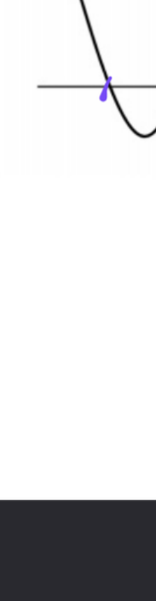
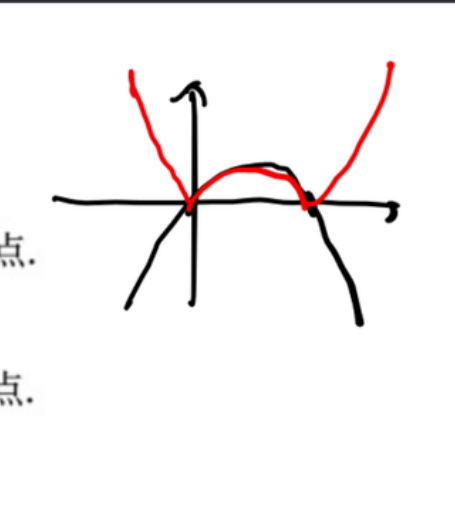
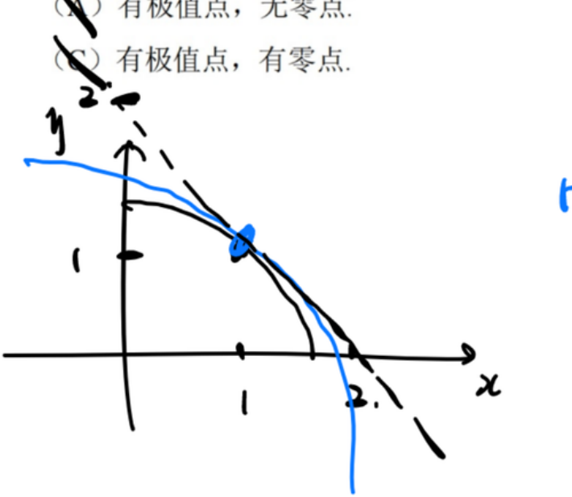
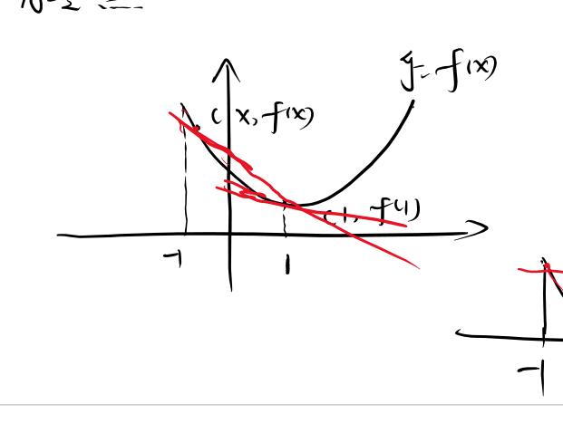
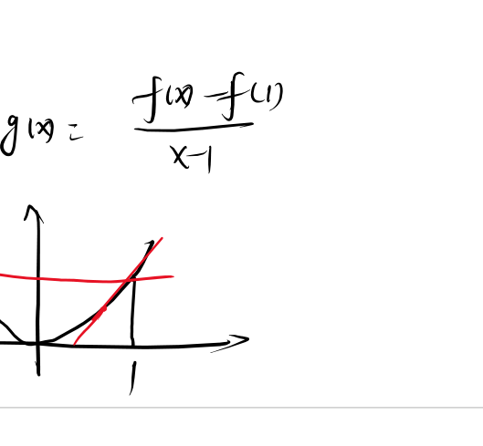

导数应用_例题
📐 数学 · 例题集13 道例题
全量收录本板块课件例题(0425（1）、0715（1）), 按方法分组。
手写 OCR 部分数值模糊处标数值不清; 重建解答标【AI补全】。⬅ 返回 理论笔记
一、单调区间与极值(第一充分条件)
例 1.1 当 $x=$ ____ 时, 函数 $y=x\cdot 2^x$ 取得极小值。 【0425（1）例3.12】
- 考点: 乘积函数求导 + 第一充分条件判别极值
- 理论极值第一充分条件 · 单调性判定 相关例 1.2 同为第一充分条件判极值, 例 1.1 是乘积函数小题、例 1.2 是多项式标准流程
解答过程
① $y'=2^x+x\cdot 2^x\ln 2 = 2^x(1+x\ln 2)$。由于 $2^x>0$, $y'=0\iff 1+x\ln 2=0\iff x=-\frac{1}{\ln 2}$乘积求导 $(uv)'=u'v+uv'$: $(x)'=1$, $(2^x)'=2^x\ln 2$, 再提公因式 $2^x$。易错: 常数底指数函数求导别忘乘 $\ln 2$。
② 当 $x<-\frac{1}{\ln 2}$ 时, $1+x\ln 2<0$, $y'<0$; 当 $x>-\frac{1}{\ln 2}$ 时, $y'>0$$\ln 2>0$, 故 $1+x\ln 2$ 随 $x$ 增大而增大, 恰在驻点处变号; 也可代代表点定号(如 $x=-2$ 处为负, $x=0$ 处为正)。
③ $y'$ 由负变正 → $x=-\frac{1}{\ln 2}$ 处取得极小值第一充分条件: $y'$ 左负右正, 函数先减后增, 该驻点为极小值点。考点: 判极值先看驻点处导函数是否变号, 变号方向决定极大/极小。
④ 极小值为 $y_{\min}= -\frac{1}{\ln 2}\cdot 2^{-1/\ln 2} = -\frac{1}{e\ln 2}$ 【AI补全】驻点代回 $y$ 后用恒等式 $a^b=e^{b\ln a}$ 化简: $2^{-1/\ln 2}=e^{(-1/\ln 2)\ln 2}=e^{-1}$。
⭐ 经典: 乘积函数求导 + 第一充分条件求极值点的小题模板, $(a^x)'=a^x\ln a$ 与"变号判极值"都是必考点。
例 1.2 求 $f(x)=x^3-\frac{9}{2}x^2+6x$ 的单调区间和极值。 【0425（1）例3.13】【AI补全】
- 考点: 三次多项式单调性 + 极值的标准流程
- 理论单调区间标准步骤 · 极值第一充分条件 碰撞例 2.1 同一求极值, 例 1.2 用导数变号(第一充分)、例 2.1 用二阶导符号(第二充分) 相关例 1.1 同为第一充分条件判极值, 本题为多项式标准流程
- 注: 原 OCR 题干模糊, 此处按单调区间 $(-\infty,1)\!\uparrow$, $(1,2)\!\downarrow$, $(2,+\infty)\!\uparrow$ 及驻点 $x=1$(极大)、$x=2$(极小) 重建标准三次函数。
解答过程
① $f'(x)=3x^2-9x+6=3(x-1)(x-2)$。驻点: $x=1,\ x=2$多项式逐项求导后十字相乘分解: $x^2-3x+2=(x-1)(x-2)$; 三次多项式全平面可导, 极值点只可能出现在驻点。
② 区间判别: $x<1$: $f'>0$ ↗; $1<x<2$: $f'<0$ ↘; $x>2$: $f'>0$ ↗$f'$ 是开口向上的二次函数, 两根之外为正、两根之间为负; 也可代代表点验证(如 $0,\ 1.5,\ 3$)。
③ 极大值 $f(1)=\frac{5}{2}$, 极小值 $f(2)=2$。第一充分条件: $x=1$ 处 $f'$ 由正变负(极大); $x=2$ 处由负变正(极小)代值计算: $f(1)=1-\frac92+6=\frac52$, $f(2)=8-18+12=2$; 单调区间以驻点为分界, 导数变号处对应极值。考点: 三次函数单调性与极值的标准流程, 写极值务必算函数值。
⭐ 经典: 三次多项式求单调区间与极值的标准流程: 求导、分解因式、列表判号, 考研基础必练。
例 1.3 设函数 $f(x)$ 在 $(-\infty,+\infty)$ 内连续, 其导函数的图形如图所示, 则 $f(x)$ 有 _ 个极小值点和 _ 个极大值点。 【0425（1）例3.14】

📐 课件原图
📐 课件原图: 导函数 f'(x) 的图形（0425(1)(1) 页8）
- 考点: 由 $f'(x)$ 图像判断 $f(x)$ 的极值点
- 理论极值第一充分条件 · 极值必要条件 碰撞例 1.1 解析求导 vs 读 $f'$ 图像判极值, 判据同为"$f'$ 变号穿轴"
- 方法: $f'$ 的零点 + $f'$ 的变号(正→负 = 极大; 负→正 = 极小)
解答过程
① 极值点出现于 $f'(x)=0$ 且 $f'$ 变号处(或 $f'$ 不存在的变号点)可导函数的极值点必为驻点(费马定理), 但驻点未必是极值点——关键是 $f'$ 在零点两侧是否变号, 不变号的驻点只是"平缓点"。
② 读图: $f'$ 共有 4 个零点, 其中 2 个处 $f'$ 由正变负(极大值点), 2 个处 $f'$ 由负变正(极小值点)看图像上 $f'$ 穿过 $x$ 轴的方向: 从上往下穿(正→负)对应极大, 从下往上穿(负→正)对应极小; 与 $x$ 轴相切而不穿过的零点不变号, 不算极值点。易错: 只数 $f'=0$ 的个数会把不变号零点也算进去。
③ 答案: 两个极小值点和两个极大值点, 选 (C)数字按原课件图形读出; 若原图零点数或穿轴方向不同, 依"穿轴变号才计数"的规则重数即可, 判定方法不变。
⭐ 经典: 由 $f'$ 图像数 $f$ 的极值点——只数"变号穿轴"的零点, 考研高频图像题。
二、极值判定(第二充分条件 + 特殊题型)
例 2.1 函数 $y=f(x)$ 由方程 $y^2-xy+x^2-3=0$ 确定, 求 $f(x)$ 的驻点, 并判断其是否为极值点。 【0425（1）例3.15】
- 考点: 隐函数求导 + 第二充分条件判定极值
- 理论极值第二充分条件 · 极值必要条件 碰撞例 1.2 同一求极值, 本题用第二充分条件(二阶导)、例 1.2 用第一充分条件(导数变号) 碰撞例 2.2 同靠"极值点必为驻点", 本题正向找驻点判极值、例 2.2 反向以非驻点排除极值
解答过程
① 隐函数求导: $2y\cdot y'-y-xy'+2x=0$, 整理得 $y'(2y-x)=y-2x$等式两边对 $x$ 求导, $y$ 视为 $x$ 的函数: $(y^2)'=2yy'$, $(-xy)'=-(y+xy')$, 移项整理。
② 驻点条件 $y'=0$: 代入得 $y-2x=0$, 即 $y=2x$隐函数不先解出 $y$, 而是由 $y'=0$ 得到 $y$ 与 $x$ 的关系式 $y=2x$, 再与原方程联立求点。
③ 将 $y=2x$ 代入原方程: $4x^2-2x^2+x^2-3=0$, $3x^2=3$, $x=\pm1$驻点坐标须同时满足原方程与驻点条件两个等式, 缺一不可。
④ 得两个驻点: $(1,2)$ 和 $(-1,-2)$$x$ 代回 $y=2x$ 得纵坐标; 该隐式方程实为椭圆 $y^2-xy+x^2=3$, 左右顶点处切线水平, 局部满足隐函数存在条件, 可解出 $y=f(x)$。
⑤ 二次求导(在原求导式 $2yy'-y-xy'+2x=0$ 上再求导): $2(y')^2+2yy''-y'-y'-xy''+2=0$再对 $x$ 求导一次, $y,\ y'$ 都是 $x$ 的函数: $(yy')'=(y')^2+yy''$, $(xy')'=y'+xy''$。考点: 驻点处再求二阶导, 为第二充分条件做准备。
⑥ 代 $y'=0$ 得: $y''(2y-x)+2=0$, 即 $y''=-\frac{2}{2y-x}$驻点处 $y'=0$, 含 $y'$ 的项全部消失; 因 $2y-x\ne0$ 可解出 $y''$ 的显式表达式。
⑦ 在 $(1,2)$: $y''=-\frac{2}{4-1}=-\frac{2}{3}<0$ → 极大值第二充分条件: 二阶导为负 ⇒ 取极大。易错: 第二充分条件仅在 $y''\ne0$ 时成立, 本题两驻点处均非零。
⑧ 在 $(-1,-2)$: $y''=-\frac{2}{-4+1}=\frac{2}{3}>0$ → 极小值二阶导为正 ⇒ 取极小; 一极大一极小与椭圆"右顶点高、左顶点低"的形态一致, 可互相印证。
⭐ 经典: 隐函数求极值四步走: 隐求导→$y'=0$ 得 $y$-$x$ 关系→回代原方程求点→二次隐求导判号, 考研常规考点。
例 2.2 函数 $f(x)$ 在 $x=0$ 的某邻域内连续, 且 $\displaystyle\lim_{x\to0}\frac{f(x)}{x}=-1$, 则 $f(x)$ 在 $x=0$ 处( ) 【0425（1）例3.16】
(A) 不可导 (B) 可导且导数不为零 (C) 取极大值 (D) 取极小值
解答过程
① 由 $\lim\frac{f(x)}{x}=-1$ 且分母 $x\to0$, 极限存在且有限 → 必须 $f(0)=0$ (否则极限为 $\infty$)若 $f(0)\ne0$, 由连续性 $f(x)\to f(0)\ne0$ 而分母 $x\to0$, 分式将趋于 $\pm\infty$, 与极限为 $-1$ 矛盾。易错: 用连续性先把 $f(0)$ 补出来, 是本题的隐含第一步。
② $f'(0)=\lim_{x\to0}\frac{f(x)-f(0)}{x-0}=\lim_{x\to0}\frac{f(x)}{x}=-1$。故 $f$ 在 $x=0$ 可导, 且 $f'(0)=-1\neq0$导数定义式与题设极限同形, 直接读出 $f'(0)=-1$: 函数在 0 点切线斜率为 $-1$, 可导且导数非零。
③ $f'(0)\neq0$ → $x=0$ 不是驻点, 不可能为极值点(可导情形下极值点必须是驻点)费马定理: 可导函数的极值点处导数必为零; 反之 $f'(0)\ne0$ 直接排除极值, 无需再看二阶导。
④ 答案: (B) 可导且导数不为零由②可导且 $f'(0)=-1\ne0$; 曲线在 0 处以负斜率斜穿横轴, 是"由正转负"的过渡点而非极值点。
【注】OCR 中该题解答批注似乎指向 (C), 但数学推导显示 (B) 为正确选项: $f'(0)=-1\neq0$ 意味着函数在 $x=0$ 处以负斜率穿过, 非极值。【AI补全】检验直觉: 取 $f(x)=-x$ 恰满足 $\lim\frac{f(x)}{x}=-1$ 与连续性, 在 0 处可导且非极值, 与选项 (B) 一致, 证明批注 (C) 系 OCR 误读。
⭐ 经典: 由极限式反推 $f(0)$ 与 $f'(0)$, 再用"极值点必为驻点"排除极值, 考研经典小题。
例 2.3 设函数 $f(x)$ 满足 $f''(x)-[f'(x)]^2=2x$ 且 $f'(0)=0$, 则( ) 【0715（1）例3.20】
(A) $f(0)$ 是 $f(x)$ 的极小值
(B) $f(0)$ 是 $f(x)$ 的极大值
(C) $(0,f(0))$ 是曲线 $y=f(x)$ 的拐点
(D) $f(0)$ 不是 $f(x)$ 的极值, $(0,f(0))$ 也不是拐点
解答过程
① 代入 $x=0$: $f''(0)-[f'(0)]^2=0$, 得 $f''(0)=0$题给恒等式对一切 $x$ 成立, 直接代 $x=0$ 并利用 $f'(0)=0$ 得 $f''(0)=0$; 二阶导为零只是拐点的必要条件, 须继续求三阶导定性。
② 对方程两边求导: $f'''(x)-2f'(x)f''(x)=2$。代入 $x=0$: $f'''(0)-0=2$, 得 $f'''(0)=2>0$恒等式逐项对 $x$ 求导: $[f'(x)]^2$ 的导数为 $2f'(x)f''(x)$, $(2x)'=2$。考点: 题给微分恒等式可反复求导, 逐次提取各阶导数在一点的值。
③ $f''(0)=0$ 且 $f'''(0)>0$ → $f''$ 在 $x=0$ 处由负变正(零点且递增) → $x=0$ 是 $f''$ 的变号点$f'''(0)=2>0$ 说明 $f''$ 在 0 点递增地穿过横轴: 左侧 $f''<0$、右侧 $f''>0$。
④ $f''$ 变号 + $f$ 连续 → $(0,f(0))$ 是拐点拐点判定: 二阶导在 $x_0$ 两侧异号且函数连续。$f''$ 存在 ⇒ $f'$ 可导 ⇒ $f$ 连续, 条件齐备。
⑤ 检验极值: $f'(0)=0$, $f''(0)=0$, 需看 $f'$ 是否变号。$f''$ 在 0 处由负变正 → $f'$ 先减后增, 在 $x=0$ 处 $f'$ 取极小值(即 $f'(0)=0$ 是 $f'$ 的极小值)。由于 $f'(0)=0$ 且 $f'$ 在 0 两侧均为正(因为 $f'$ 在 0 处取到最小值 0), 故 $f'(x)\ge0$, $f$ 单调不减, $x=0$ 不是极值点$f''<0$(左侧)⇒ $f'$ 在左侧递减、$f''>0$(右侧)⇒ $f'$ 在右侧递增, 故 $f'$ 在 0 两侧都取正值(不小于 $f'(0)=0$), 不穿越横轴: $f$ 在该邻域单调不减, 0 非极值点。易错: $f'(0)=f''(0)=0$ 时须靠变号信息定性, 不能凭一阶二阶都为零就断为非极值。
⑥ 答案: (C)综合: 拐点成立(④)、极值不成立(⑤), 与选项 (C) 一致。
⭐ 经典: 对题给微分恒等式逐次求导提取 $f''(0)$、$f'''(0)$, 用二阶导变号同时判拐点与极值, 考研经典综合题。
三、凹凸性与拐点
例 3.1 求曲线 $y=\frac{x}{(x-1)^2}$ 的凹凸区间及拐点。 【0425（1）例3.17】【AI补全】
- 考点: 二阶导符号判凹凸 + 拐点计算
- 理论凹凸性判别法 · 拐点 相关例 3.2 同为 $f''$ 变号判拐点, 例 3.1 求全部凹凸区间与拐点、例 3.2 判单点性质
- 注: 原 OCR 题干模糊, 按手写导数线索重建为标准分式函数。
解答过程
① $y=\frac{x}{(x-1)^2}$, 定义域 $x\neq1$分母 $(x-1)^2$ 不能为零; 讨论凹凸与拐点前必须先定定义域, 断点处 $y''$ 无定义但不可算作拐点。
② $y'=\frac{(x-1)^2-x\cdot2(x-1)}{(x-1)^4}=\frac{-(x+1)}{(x-1)^3}$商法则 $\left(\frac{u}{v}\right)'=\frac{u'v-uv'}{v^2}$: $u=x$, $v=(x-1)^2$; 分子提公因式 $(x-1)$ 约分得 $-(x+1)$。
③ $y''=\frac{2(x+2)}{(x-1)^4}$。$y''=0\iff x=-2$; $y''$ 在 $x=1$ 处不存在(但 $x=1$ 不在定义域)对 $y'=-(x+1)(x-1)^{-3}$ 用乘积法则再求导, 通分后分子恰为 $2(x+2)$; 分母 $(x-1)^4$ 恒正, 故 $y''$ 符号由分子 $x+2$ 决定。
④ $x<-2$: $y''<0$ → 凸; $x>-2$ 且 $x\neq1$: $y''>0$ → 凹$x=1$ 两侧分子同号, $(-2,1)$ 与 $(1,+\infty)$ 同为凹区间; 凹区间分段时必须把定义域外的 $x=1$ 断开。易错: 区间端点须取自定义域, 凹凸性描述以 $y''$ 符号为准。
⑤ 拐点: $x=-2$, $y(-2)=-\frac{2}{9}$, 拐点为 $(-2,-\frac{2}{9})$$y''$ 在 $x=-2$ 两侧变号且该点在定义域内, 故为拐点; 纵坐标代回 $y=\frac{x}{(x-1)^2}$: $\frac{-2}{9}$。
⭐ 经典: 分式函数凹凸性与拐点: 商法则求两阶导、分子定号、$y''$ 变号点判拐点, 标准流程。
例 3.2 设函数 $f(x)=[x(1-x)]^3$, 则( ) 【0425（1）例3.18】

📐 课件原图
📐 课件原图: f(x)=|x(1−x)| 图像（0425(1)(1) 页15）
(A) $x=0$ 是 $f(x)$ 的极值点, 但 $(0,0)$ 不是拐点
(B) $x=0$ 不是 $f(x)$ 的极值点, 但 $(0,0)$ 是拐点
(C) $x=0$ 是 $f(x)$ 的极值点, 且 $(0,0)$ 是拐点
(D) $x=0$ 不是 $f(x)$ 的极值点, $(0,0)$ 也不是拐点
- 考点: 极值与拐点同时判断, 需分别看 $f'$ 变号和 $f''$ 变号
- 理论极值第一充分条件 · 拐点 碰撞例 2.3 同题同时判极值与拐点, 变号判据互不替代 相关例 3.1 同为 $f''$ 变号判拐点, 例 3.2 判单点性质、例 3.1 求凹凸区间
解答过程
① $f(x)=x^3(1-x)^3$。$f'(x)=3x^2(1-x)^3-3x^3(1-x)^2=3x^2(1-x)^2[(1-x)-x]=3x^2(1-x)^2(1-2x)$乘积法则: $(x^3)'=3x^2$, $[(1-x)^3]'=-3(1-x)^2$; 提取公因式 $3x^2(1-x)^2$ 后括号内合并: $(1-x)-x=1-2x$。
② 在 $x=0$ 附近: $x^2>0$, $(1-x)^2>0$, $1-2x$ 在 $0$ 附近恒正 → $f'(x)>0$ 在 $x=0$ 两侧不变号三个因子在 0 的邻域内均恒正($x^2>0$ 对 $x\ne0$; $1-2x\to1$), 故 $f'$ 在 0 两侧同号——0 是 $f'$ 的二重零点, 只"蹭"不"穿"。
③ $f'$ 不变号 → $x=0$ 不是极值点第一充分条件要求 $f'$ 变号; 此处 $f'$ 两侧皆正, 函数在 0 附近单调递增, 0 非极值点。
④ 再求导: $f''(x)=6x(1-x)(1-5x+5x^2)$。在 $x=0$ 附近 $1-x>0$ 且 $1-5x+5x^2>0$, 故 $f''(x)$ 符号与 $x$ 相同: 左侧 $f''<0$, 右侧 $f''>0$对 $f'=3x^2(1-x)^2(1-2x)$ 再求导并提取公因式 $3x(1-x)$ 化简; 在 0 附近 $f''\sim6x$, 主项定号, 故 $f''$ 在 0 两侧异号。
⑤ $f''$ 在 $x=0$ 处变号 → $(0,0)$ 是拐点拐点看 $f''$ 是否变号(且函数连续), 与 $f'$ 是否变号互不相干, 需分别考察。易错: $f''(0)=0$ 只是必要条件, 变号才是判据。
⑥ 答案: (B)0 不是极值点、$(0,0)$ 是拐点, 对应 (B); 补充: $f''$ 在 $x=1$ 处也变号, $(1,0)$ 同为拐点, 但本题只问 $x=0$。
⭐ 经典: 极值与拐点独立判定: $f'$ 变号管极值、$f''$ 变号管拐点, 两个判据互不替代, 考研经典辨析题。
四、渐近线
例 4.1 求曲线 $y=\frac{1}{x}+\ln(1+e^x)$ 的渐近线。 【0425（1）例3.19】
- 考点: 三种渐近线的综合求法, 重点在 $x\to+\infty$ 与 $x\to-\infty$ 分侧讨论 $\ln(1+e^x)$ 的渐近行为
- 理论渐近线定义与求法 · 渐近线标准流程
解答过程
① 铅直渐近线: $x=0$ 处 $\frac{1}{x}\to\infty$, 故 $\lim_{x\to0}y=\infty$, $x=0$ 为铅直渐近线铅直渐近线出现在函数无定义点附近: $x=0$ 是 $\frac1x$ 的唯一无定义点, 该处 $\ln(1+e^x)$ 有界, $\frac1x$ 主导发散。
② $x\to-\infty$: $\frac{1}{x}\to0$, $\ln(1+e^x)\to\ln(1+0)=0$, 故 $\lim_{x\to-\infty}y=0$。得水平渐近线 $y=0$$x\to-\infty$ 时 $e^x\to0$, $\ln(1+e^x)\to\ln1=0$。易错: $e^x$ 在负无穷侧趋于 0, 别把 $\ln(1+e^x)$ 当成 $x$。
③ $x\to+\infty$: 关键处理 $\ln(1+e^x)=\ln[e^x(1+e^{-x})]=x+\ln(1+e^{-x})$把 $e^x$ 提到对数外拆出线性主部 $x$, 剩余项 $\ln(1+e^{-x})\to0$——这是求斜渐近线的关键一步。
④ $k=\lim_{x\to+\infty}\frac{y}{x}=\lim\frac{\frac{1}{x}+x+\ln(1+e^{-x})}{x}=1+\lim\frac{\ln(1+e^{-x})}{x}=1$斜渐近线斜率 $k=\lim_{x\to+\infty}\frac{y}{x}$: 拆开后 $\frac{1/x}{x}=\frac1{x^2}\to0$, $\frac{x}{x}=1$, $\frac{\ln(1+e^{-x})}{x}\to0$(分子趋于 0、分母趋于 $\infty$)。
⑤ $b=\lim_{x\to+\infty}[y-x]=\lim[\frac{1}{x}+x+\ln(1+e^{-x})-x]=\lim[\frac{1}{x}+\ln(1+e^{-x})]=0+\ln1=0$截距 $b=\lim_{x\to+\infty}(y-kx)$, 代 $k=1$ 后 $x$ 项对消; $\ln(1+e^{-x})\sim e^{-x}\to0$, $\frac1x\to0$。
⑥ 得斜渐近线 $y=x$ (仅 $x\to+\infty$ 侧)斜率、截距均存在有限 ⇒ 斜渐近线 $y=kx+b=x$; 该结果只在 $+\infty$ 侧成立, 不得推广到 $-\infty$ 侧。
⑦ 总结: 铅直 $x=0$; $x\to-\infty$ 水平 $y=0$; $x\to+\infty$ 斜 $y=x$流程: 先列无定义点查铅直, 再分 $x\to\pm\infty$ 两侧各自检查水平/斜渐近线。考点: 渐近线综合题按"无定义点 + 两侧极限"三线分类作答。
【注】同一侧水平与斜互斥: $x\to-\infty$ 侧有水平无斜, $x\to+\infty$ 侧有斜无水平$-\infty$ 侧极限有限($y\to0$)故是水平渐近线, 该侧斜率极限 $k=0$ 而非 1; $+\infty$ 侧 $k=1$ 故为斜渐近线, 不再有水平。易错: 勿把 $y=x$ 当作整条曲线的渐近线。
⭐ 经典: 渐近线标准流程: 无定义点查铅直、$\pm\infty$ 两侧分别查水平与斜($k=\lim\frac yx$, $b=\lim(y-kx)$), 考研高频综合题。
五、零点个数与参数范围
例 5.1 已知方程 $\displaystyle\frac{x}{\ln(1+x)}=k$ 在 $(0,1)$ 内有实根, 求常数 $k$ 的取值范围。 【0715（1）例3.17】
解答过程
① 令 $f(x)=\frac{x}{\ln(1+x)}$, $x\in(0,1)$方程有根 ⇔ 常数 $k$ 落在 $f$ 的值域内, 于是把"求参数范围"转化为"求函数值域"。
② $f'(x)=\frac{\ln(1+x)-\frac{x}{1+x}}{\ln^2(1+x)}=\frac{(1+x)\ln(1+x)-x}{(1+x)\ln^2(1+x)}$商法则: 分子 $=1\cdot\ln(1+x)-x\cdot\frac1{1+x}$, 通分得 $(1+x)\ln(1+x)-x$, 分母平方后再乘 $(1+x)$。
③ 令 $g(x)=(1+x)\ln(1+x)-x$, $g'(x)=\ln(1+x)>0$, $g(0)=0$。故 $g(x)>0$, $f'(x)>0$$g'=\ln(1+x)+(1+x)\cdot\frac1{1+x}-1=\ln(1+x)>0$ 且 $g(0)=0$, 故 $g>0$ 在 $(0,1)$ 成立; 分子分母皆正 ⇒ $f'>0$。考点: 导数分子符号难直接判断时, 设辅助函数 $g$ 用"导数符号 + 端点值"判号。
④ $f(x)$ 在 $(0,1)$ 上严格递增开区间内 $f'>0$ 恒成立 ⇒ 严格递增; 递增函数的值域由两端极限刻画。
⑤ $\lim_{x\to0^+}f(x)=\lim_{x\to0^+}\frac{x}{\ln(1+x)}=\lim\frac{x}{x}=1$ (等价无穷小 $\ln(1+x)\sim x$)$\ln(1+x)\sim x$ 是 $x\to0$ 的基本等价无穷小。易错: $x=0$ 不在定义域, 只能取右极限, 值域左端点 1 取不到。
⑥ $f(1)=\frac{1}{\ln2}$。值域: $(1,\ \frac{1}{\ln2}]$严格递增 ⇒ 值域为 $(\lim_{x\to0^+}f,\ f(1)]$: 右端点 $x=1$ 在定义域内可以取到, 故值域右端闭。
⑦ 要使 $\frac{x}{\ln(1+x)}=k$ 在 $(0,1)$ 内有根, 需 $k$ 在值域内: $k\in(1,\ \frac{1}{\ln2})$根须落在开区间 $(0,1)$ 内: $k=\frac1{\ln2}$ 时唯一根在端点 $x=1$, 不合题意, 故答案右端取开; $k=1$ 时方程 $x=\ln(1+x)$ 在 $x>0$ 恒无解(因 $\ln(1+x)<x$), 左端也取开。易错: 端点开闭由"根是否落在区间内部"决定, 值域闭端点未必可用。
⭐ 经典: 方程有根 ⇔ 参数落在值域: 单调性 + 两端极限求值域, 端点开闭按根的位置细抠, 经典题型。
例 5.2 设函数 $f(x)=ax-b\ln x\ (a>0)$ 有两个零点, 则 $\frac{b}{a}$ 的取值范围为( ) 【0715（1）例3.18】
(A) $(e,+\infty)$ (B) $(0,e)$ (C) $(0,\frac{1}{e})$ (D) $(\frac{1}{e},+\infty)$
解答过程
① $f'(x)=a-\frac{b}{x}=\frac{ax-b}{x}$, 定义域 $x>0$。有两零点 → $f$ 须先减后增 → 须 $b>0$若 $b\le0$ 则 $f'>0$ 恒成立, $f$ 严格递增至多一个零点; 两零点要求函数先降后升, 故 $b>0$ 是前提。
② 驻点 $x=\frac{b}{a}$: $(0,\frac{b}{a})$ 上 $f'<0$ ↘; $(\frac{b}{a},+\infty)$ 上 $f'>0$ ↗驻点 $x=\frac ba$ 由 $f'=a-\frac bx=0$ 解出; 分母 $x>0$, 符号由分子 $ax-b$ 决定, 恰在驻点处由负变正。
③ $f(\frac{b}{a})=a\cdot\frac{b}{a}-b\ln\frac{b}{a}=b(1-\ln\frac{b}{a})$ 为全局最小值先减后增 ⇒ 驻点是唯一极小值点, 也就是全局最小值点; 代入化简得 $b-b\ln\frac ba$。
④ 有两个零点 $\iff$ 最小值 $<0$ 且两端极限 $>0$: $b(1-\ln\frac{b}{a})<0$严格先减后增的连续函数, 当最小值低于横轴、两端趋于 $+\infty$ 时, 与横轴在驻点两侧各交一次, 恰好两个零点。考点: 零点个数 = 单调性 + 极值符号 + 两端极限三要素。
⑤ $b>0$ ⇒ $1-\ln\frac{b}{a}<0$ ⇒ $\ln\frac{b}{a}>1$ ⇒ $\frac{b}{a}>e$除以正数 $b$ 不等号方向不变; $\ln t>1$ 即 $t>e$。
⑥ 验证: $\lim_{x\to0^+}f(x)=+\infty>0$; $\lim_{x\to+\infty}f(x)=+\infty>0$ (一次函数主导)。条件满足$x\to0^+$ 时 $-b\ln x\to+\infty$ 主导($b>0$); $x\to+\infty$ 时 $ax$ 主导对数项; 两端极限为正保证零点各居驻点一侧且不缺失。
⑦ 答案: (A) $(e,+\infty)$由 $\frac ba>e$ 直接对应选项 (A); 数值验证: $a=1,\ b=3>e$ 时 $f(x)=x-3\ln x$ 在 $x=3$ 取最小值 $3(1-\ln3)\approx-0.296<0$, 恰有两个零点。
⭐ 经典: 含参函数零点个数问题: 单调性定位唯一极值, 最小值符号定参数范围, 考研高频。
六、变限积分函数极值
💡 本组理论补充: 变限积分求导公式 $\frac{d}{dx}\int_a^{u(x)} f(t)\,dt=f(u(x))\,u'(x)$(下限为常数时只代上限); 被积函数含参数 $x$ 时先拆分——把 $x$ 移出成"外因子 × 纯 $t$ 函数"的线性组合(如 $x^2\int_0^x e^{-t^2}dt$), 再逐项求导; 求导后照常走"单调区间标准步骤"判单调与极值。
例 6.1 求函数 $f(x)=\int_0^x (x^2-t)e^{-t^2}\,dt$ 的单调区间与极值。 【0715（1）例3.19】
解答过程
① 拆开积分: $f(x)=x^2\int_0^x e^{-t^2}dt-\int_0^x te^{-t^2}dt$被积函数含参数 $x$, 先按 $x$ 拆成"积分外因子 × 纯上限积分"与"纯变限积分"两项, 使 $x$ 只出现在积分限与外因子中, 才便于求导——此即"含参积分拆分"的处理手法。
② 求导(注意第一项含 $x^2$ 因子与上限 $x$): $f'(x)=2x\int_0^x e^{-t^2}dt+x^2 e^{-x^2}-x e^{-x^2}$乘积法则: 第一项 $\left(x^2\int_0^x e^{-t^2}dt\right)'=2x\int_0^x e^{-t^2}dt+x^2e^{-x^2}$(上限代入); 第二项由变限积分基本公式 $(\int_0^x te^{-t^2}dt)'=xe^{-x^2}$。考点: 变限积分求导 = 上限代入被积函数, 有外因子时勿忘乘积法则。
③ $f'(x)=2x\int_0^x e^{-t^2}dt+e^{-x^2}(x^2-x)=2x\int_0^x e^{-t^2}dt+x(x-1)e^{-x^2}$合并同类项: $x^2e^{-x^2}-xe^{-x^2}=x(x-1)e^{-x^2}$; 提取公因式 $x$ 后 $f'=x\cdot h(x)$, 为下面定号做准备。
④ 令 $h(x)=2\int_0^x e^{-t^2}dt-(1-x)e^{-x^2}$, 则 $f'(x)=x\cdot h(x)$。$x<0$ 时 $f'$ 的两项均正, $x\ge1$ 时 $f'$ 的两项均非负(第一项恒正), 故驻点只可能出现在 $[0,1]$ 内【修正】$x<0$: $\int_0^x e^{-t^2}dt<0$, 故 $2x\int_0^x e^{-t^2}dt>0$(两负相乘); $x(x-1)$ 亦为正。$x\ge1$: $x(x-1)\ge0$。先把无驻点的区间排除, 缩小搜索范围。
⑤ $h'(x)=e^{-x^2}(-2x^2+2x+3)>0$ 在 $[0,1]$ 上恒成立, 且 $h(0)=-1<0$, $h(1)=2\int_0^1 e^{-t^2}dt>0$, 故 $h$ 在 $(0,1)$ 内有唯一零点 $x^*$, 即方程 $2\int_0^{x^*}e^{-t^2}dt=(1-x^*)e^{-(x^*)^2}$ 的唯一解, $x^*\approx0.318$【修正】$-2x^2+2x+3$ 在 $[0,1]$ 上的最小值为 3, 恒正, 故 $h$ 严格递增; 两端异号由介值定理得零点存在, 严格递增得唯一。该方程无初等闭式解, 数值求解得 $x^*\approx0.318$。
⑥ 符号表: $(-\infty,0)$: $f'>0$ ↗; $(0,x^*)$: $f'<0$ ↘; $(x^*,+\infty)$: $f'>0$ ↗【修正】$f'=x\cdot h(x)$: $x<0$ 时由第④步两项直接判 $f'>0$; $0<x<x^*$ 时 $x>0$ 而 $h(x)<0$($h$ 在 $[0,1]$ 递增且 $h(x^*)=0$); $x>x^*$ 时 $x>0$ 且 $h(x)>0$, 对 $x\ge1$ 又回到第④步的直接判法。说明: 原稿称驻点为 $x=\pm1$, 直接代入 $f'(1)=2\int_0^1 e^{-t^2}dt>0$、$f'(-1)\approx2.23>0$ 均不为零, 与符号表自相矛盾, 按题面重新推导如上。
⑦ 极大值 $f(0)=0$; 极小值 $f(x^*)=\frac{1}{2}\left[\left(1+x^{*2}(1-x^*)\right)e^{-(x^*)^2}-1\right]\approx-0.017$$x=0$ 处 $f'$ 由正变负 → 极大, $f(0)=\int_0^0(\cdots)dt=0$; $x^*$ 处由负变正 → 极小。用驻点条件 $2\int_0^{x^*}e^{-t^2}dt=(1-x^*)e^{-(x^*)^2}$ 与 $\int_0^{x^*}te^{-t^2}dt=\frac{1-e^{-(x^*)^2}}{2}$ 消去积分即得闭式; 原稿的 $f(\pm1)$ 数值不清标记随之失效($\pm1$ 非驻点)。
※ 偏题: 拆分 + 变限积分求导本身是常规考点, 但本题驻点需解超越方程(无初等闭式解), 且原【AI补全】的 $x=\pm1$ 经代入检验有误——这类"驻点算不出来"的题考研极少见, 疑为 OCR 转录失真, 掌握拆分、求导、判号框架即可。
七、曲率与曲率圆
例 7.1 若 $f''(x)$ 不变号, 且曲线 $y=f(x)$ 在点 $(1,1)$ 处的曲率圆为 $x^2+y^2=2$, 则函数 $f(x)$ 在区间 $(1,2)$ 内( ) 【0715（1）例3.21】

📐 课件原图
📐 课件原图: 曲率圆 x²+y²=2 示意（0715(1) 页14）

📐 课件原图
📐 课件原图: 曲线与切线/曲率圆示意（一元函数微分学 页16）

📐 课件原图
📐 课件原图: 函数 g(x) 曲线示意（一元函数微分学 页16）
(A) 有极值点, 无零点
(B) 无极值点, 有零点
(C) 有极值点, 有零点
(D) 无极值点, 无零点
- 考点: 曲率圆的几何含义 → 反推 $f',f''$ → 分析单调性与零点
- 理论曲率圆 · 曲率公式 · 凹凸性判别法 碰撞例 2.3 同为由题设反推 $f'(x_0)$、$f''(x_0)$ 再判性质, 例 7.1 的信息源是曲率圆
解答过程
① 曲率圆 $x^2+y^2=2$: 中心在原点, 半径 $R=\sqrt2$, 曲率 $K=\frac{1}{R}=\frac{1}{\sqrt2}$圆 $x^2+y^2=R^2$ 上任一点曲率恒为 $\frac1R$; 曲率圆是在切点处与曲线贴合最紧密的圆, 蕴含该点 $f,f',f''$ 的信息。
② 曲率圆与曲线在 $(1,1)$ 有一阶和二阶接触。对圆隐函数求导: $2x+2yy'=0$, 得 $y'=-\frac{x}{y}$。在 $(1,1)$: $y'=-1$曲率圆与曲线在切点相切(一阶接触), 故切线斜率相同: $f'(1)=-1$。
③ 再求导: $2+2(y')^2+2yy''=0$, 代入 $y'=-1$: $2+2+2y''=0$, $y''=-2$。故 $f'(1)=-1$, $f''(1)=-2$二阶接触使二阶导也相同: $f''(1)=-2$。考点: 曲率圆在切点给出 $f$, $f'$, $f''$ 三个数值, 是把几何条件转成导数条件的桥梁。
④ $f''(x)$ 不变号且 $f''(1)=-2<0$ → $f''(x)<0$ 恒成立 → $f$ 在 $\mathbb{R}$ 上上凸, $f'$ 严格递减连续函数不变号, 一处为负则处处为负; $f''<0$ ⇒ $f'$ 严格递减、$f$ 上凸。易错: 判 $f'$ 单调看 $f''$ 的符号, 与 $f$ 本身的增减无关。
⑤ 在 $(1,2)$ 上: $f'(x)<f'(1)=-1<0$ → $f$ 严格递减 → 无极值点$f'$ 严格递减 ⇒ $x>1$ 时 $f'(x)<-1$; 导函数恒负 ⇒ $f$ 严格递减, 区间内无驻点更无极值点。
⑥ $f(1)=1$。$f(2)=f(1)+\int_1^2 f'(t)dt<1+\int_1^2(-1)dt=1-1=0$。故 $f(2)<0$牛顿–莱布尼茨公式联系函数增量与导函数积分; 因 $f'(t)<-1$ 严格成立, 积分才严格小于 $-1$。易错: 定号时须用严格不等式。
⑦ $f(1)=1>0$, $f(2)<0$, $f$ 连续 → 由零点定理, 在 $(1,2)$ 内有唯一零点两端异号 + 连续 ⇒ 至少一个零点; 又 $f$ 严格递减 ⇒ 至多一个, 合起来恰有一个。
⑧ 答案: (B) 无极值点, 有零点与选项逐一对应: ⑤给"无极值", ⑥⑦给"有零点", 即 (B)。
⭐ 经典: 曲率圆反推 $f'(1)$、$f''(1)$, 再借 $f''$ 不变号控制 $f'$ 单调性, 用零点定理断零点, 考研经典综合题。
知识连接
- 本板块的单调性分析是不等式证明(见 中值定理板块) 的基础工具
- 极值/最值问题在定积分应用(面积/体积最值) 和多元函数微分学中会进一步推广
- 拐点与凹凸性在函数作图中用于确定曲线的弯曲形态
- 渐近线的极限计算依赖于极限板块的基本方法(等价替换、洛必达等)
【来源: 0425（1）、0715（1）】